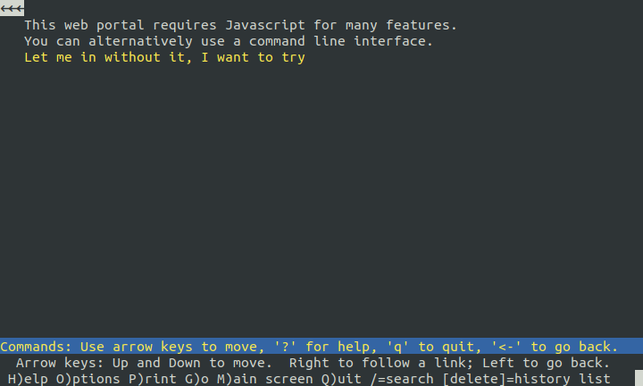
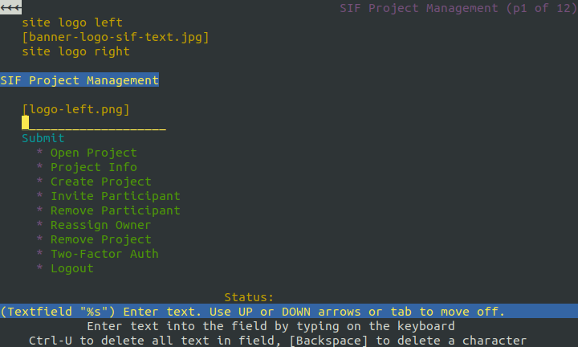

4.5. Transferring data¶
This section describes how to perform bulk data transfers between Esrum, your PC/Laptop, and services such as SIF/Erda or Computerome. Several of these sections may be useful on other systems than Esrum.
If you have an existing compute project or dataset on a KU-IT managed cluster, then you may be able to connect it directly to the Esrum cluster and thereby remove the need for transferring data entirely. Please Contact us for more information.
Warning
Data must not be copied out of audited /datasets or /projects
folders without permission from the relevant data controller! See the
Guidelines for more information.
4.5.1. Transferring data to/from Esrum¶
Users on a wired connection or using the VPN within CBMR can transfer
files to/from their PCs using any of the standard tools that connect via
SSH, including but not limited to scp, sftp, and rsync.
Windows users may also consider graphical tools such as FileZilla or
MobaXterm (see the Connecting to the cluster page).
When outside CBMR or when using the VPN is not feasible, one may instead
use the SSH/SFTP server at sftp.ku.dk. Official documentation is
provided on the UCPH computing/HPC Systems pages on KUNet.
This services gives you access to all your projects and datasets:
$ sftp sftp://abc123@sftp.ku.dk
(abc123@sftp.ku.dk) Enter password
Password: ******
(abc123@sftp.ku.dk) Enter one-time password
Enter one-time password: ******
Connected to sftp.ku.dk.
sftp> ls
ucph
sftp> cd ucph/
sftp> ls
datasets hdir ndir projects
Depending on how you have configured KU two-factor authentication, you may either need to approve the connection attempt or (as shown above) enter a one-time password
4.5.2. Transferring data to/from SIF and ERDA¶
Connecting to the SIF or ERDA servers requires that the user has successfully authenticated using Two Factor Authentication. Futhermore, this must be done using the same IP from which the user intends to connect, in this case from the Esrum IP.
This poses some challenges, as running a full-fledged browser over SSH performs very poorly. This section therefore describes how to authenticate to SIF or ERDA using a purely text-based browser available on the cluster (Lynx):
Start Lynx as follows:
lynx -accept_all_cookies "https://sif.ku.dk"
Use the up/down arrow keys to select the
log inlink underI'm already signed up to SIF with my KU / UCPH account!and pressenter.
Make sure that the
Let me in without it, I want to tryis highlighted and press enter to confirm that you wish to try login.Enter your KU username and password. Use the
tabbutton to jump to the next field andShift+Tabto jump to the previous field. Finally usetabto select the "Yes" button (appears as(BUTTON) Yes) and pressenter.
Enter your SIF two-factor code, press
tabto select theSubmitbutton, and pressenter.
You should now see a page with the header
SIF Project Management, indicating that you have logged in:Press
Ctrl+Cto quit.
Once you have successfully authenticated you may connect to the SIF/ERDA servers as normal using the tools available on Esrum.
4.5.3. Transferring data to/from Computerome¶
When transferring data/to from computerome you should always run the
transfer software on Esrum (or on your PC/laptop) and you should
always connect to Computerome via transfer.computerome.dk instead
of ssh.computerome.dk.
This avoids two big issues:
The Computerome administrators will terminate any attempts at transferring data via
ssh.computerome.dkand may suspend your account if you keep trying. This applies both to running (for example)rsynconssh.computerome.dkor if you attempt upload data to or download data from this server.While it is possible to transfer data to/from Computerome from/to Esrum by running your software on a node, this involves paying for an node on computerome for the duration of the transfer.
See the official Computerome documentation for more information.